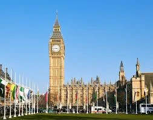

London Icon
Big Ben & Palace of Westminster
The legendary 96-meter clock tower officially named Elizabeth Tower. Features four 7-meter diameter clock faces. Part of the Palace of Westminster, home to the UK Parliament since 1295.
History